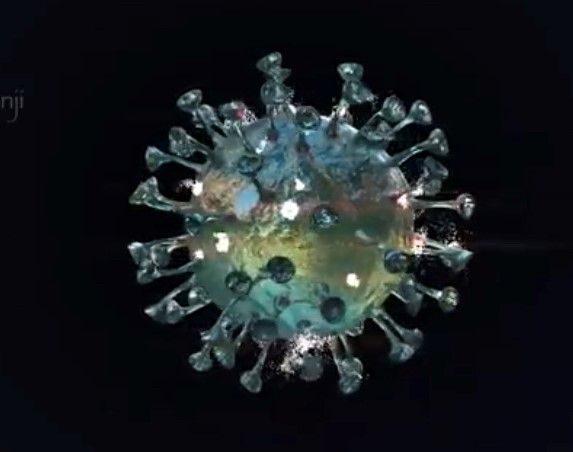

CORONA-65
"Charles Darwin's theory of evolution states that evolution happens by natural selection."
What particularly intrigued researchers was how this stiff-dodied creature
could turn in what seem to be impossibly tight circles. They discovered that the secret is in the shape of the whale's flippers.
The leading edge of its flippers is not smooth, like an aircraft wing, but serrated, with a row of protruding bumps called tubercles.
As the whale slices through the water, these tubercles increase lift and reduce drag. How? The journal Natural history explains that the turbercles make the water accelerate over the flipper in an organised, rotating flow, even when the whale is rising at very steep angles.
What practical applications does this discovery promise?
Aircraft wings based on the design would evidently need fewer wing flaps or other mechanical devices to alter airflow. Such wings would be safer and easier to maintain.
Biomechanics expert John Long believes that someday soon we may well see every single jetliner with the bumps of humpback whale fippers.
A seagull does not freeze, even while standing on ice. how does this creature conserve its body heat? Part of the secret is in a fascinating design feature found in number of animals that dwell in cold regions.
It is called countercurrent heat exchanger. What is countercurrent heat exchanger? To understand it, picture two water pipes strapped closely together. Hot water flows in one pipe, and cold, in the other. if both the hot water and the cold water flow down the pipes in the same direction, about half of the heat from the hot water will transfer to the cold. However, if the hot water and the cold water flow opposit directions, nearly all the heat will transfer from the hot water to the cold.
When a Seagull stands on ice, the heat exchangers in its legs warm the blood as it returns from the bird's cold feet. The heat exchangers conserve heat in the bird's
body and prevent heat loss from its feet. Arthur P.Fraas, a mechanical and aeronautical engineer, described this design as
one of the world's most effective regenerative heat exchangers.
This design is so ingenious that human engineers have copied it.
"Life is like riding bicycle. To keep your balance you must keep moving" -Albert Einstein
In 1817 Baron vion Drais invented a walking machine that would help him get around the royal gardens faster: two same size in-line wheels, the front one steerable, mounted in a frame upon which you straddied. The device was propelled by pushing your feet against the ground, thus rolling yourself and the device forward in a sort of gliding walk. The device was known as the Draisienne (or "hobby horse") was made entirely of wood, and propelled by pushing your feet on the ground in gliding movement. It was not seen as suitable for any place other than a well maintained pathway such as in a park or garden.
The next generation of two-wheeled riding machine was in 1865, the machine was known as the velocipede (meaning "fast foot") as well as the "bone shaker," attached pedals to the front wheel, but its wooden structure made it extremely uncomfortable. In 1870 the first all-metal machine appeared. The pedals were attached directly to the front wheel with no freewheeling mechanism. Solid rubber tires and the long spokes of the large front wheel provided a much smoother ride than its predecessor.
Time Line: 1817: Draisienne 1865: velocipede 1870: High-wheel bicycle 1876: Hihg-wheel safety 1885: Hard-tired safety 1888: Pneumatic safety
Well, the only thing that really needs to be done is to remove the CO2 and replenish the Oxygen.
CO2REMOVAL: CO2 removal is done with a material called "Zeolite" which is formed into a sponge-like structure through which the air is pumped. The "Zeolite" soaks up CO2- but (if you recall watching the Apollo 13 movies/documentaries) those scrubbers eventually 'fiil up' with CO2. Back in Apollo era, they just replaced the entire filter and threw the old one away.
But the ISS does a better job than that. What's clever about Zeolite is that it releases it's CO2 when exposed to a vacuum...and since the one thing the ISS isn't short of is vacuum- this isn't a problem. So they have at least two banks of Zeolite scrubbers- one is absorbing CO2 from the air and the other is opened to vacuum to release the CO2 into space.
OXYGEN REPLACEMENT: To produce Oxygen to replace the CO2- they use electricity from the solar panels for electrolysis of water. So water plus electricity produces hydrogen plus Oxygen. The hydrogen is released into space - and the Oxygen goes into the cabin.
Barycenter is thecenter of massof two bodies that orbit one another and is the point about which the bodies orbit.
by Prerak Sharma
Yes! Jupiter, The biggest planet in our solar system. it is so massive that 1300 earths could fit inside of this planet. Jupiter is 2.5 times more massive than all other planets in our solar system combined!
Jupitor is so big that the center of gravity of the sun and jupiter is outside of sun. Although extremely close to the surface of the sun. So the sun and Jupiter both orbit around their center of gravity which is known as barycenter.
Technically Jupiter orbits around the barycenter of sun and Jupiter which is located outside of sun. So, YES! Juoiter is so large that it doesn't orbit around the sun. Fascinating!